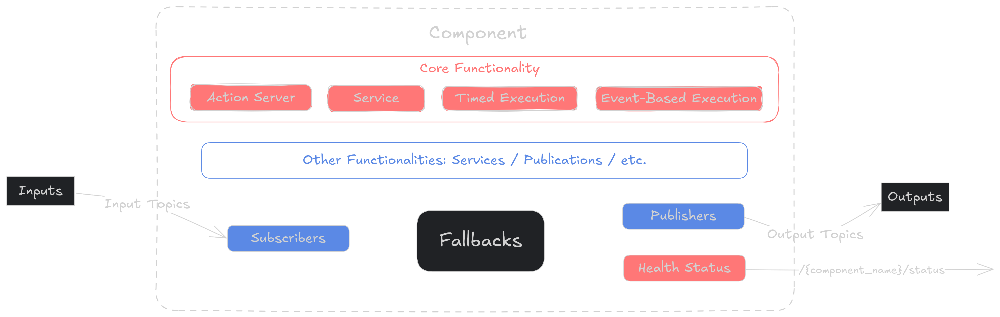
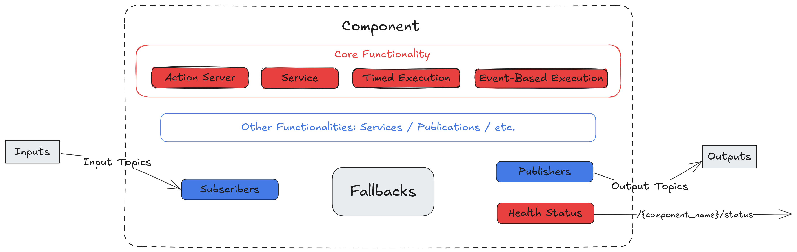
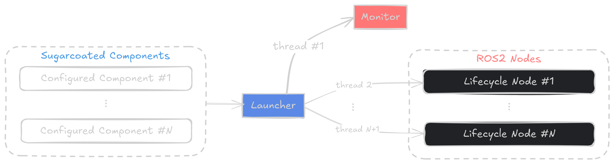
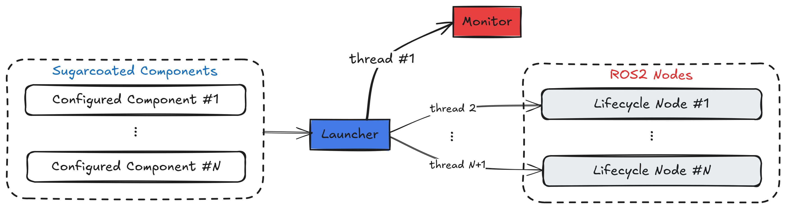
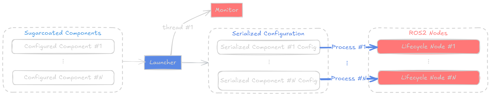
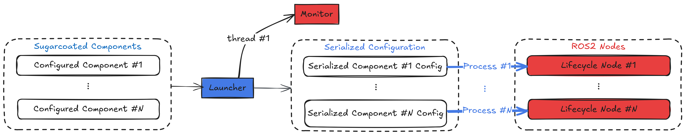

Sugarcoat 🍬#
Sugarcoat 🍬 provides a whole lot of syntactic sugar for creating multi-node ROS2 event-driven systems and management using an intuitive Python API.
Discover the advantages of using Sugarcoat for creating ROS2 packages ⚡
Learn more about the design concepts in Sugarcoat
Learn how to create your own ROS2 package using Sugarcoat
Overview#
Sugarcoat is built for ROS2 developers who want to create robust, event-driven systems with multiple nodes that are easy to use and can be configured and started with an intuitive python API. It provides primitives for writing ROS nodes and events/actions which can start/stop/modify the nodes, in the spirit of event driven software standard. Sugarcoat is also a replacement for the ROS Launch API.
A Component is the main execution unit in Sugarcoat, each component is configured with Inputs/Outputs and Fallback behaviors. Additionally, each component updates its own Health Status, to keep track of the well/mal functioning of the component. Components can be handled and reconfigured dynamically at runtime using Events and Actions. Events, Actions and Components are passed to the Launcher which runs the set of components as using multi-threaded or multi-process execution. The Launcher also uses an internal Monitor to keep track of the components and monitor events.

Component Structure#

Component Structure#

Multi-threaded execution#

Multi-threaded execution#

Multi-process execution#

Multi-process execution#
Packages created using Sugarcoat#
Kompass: a framework for building robust and comprehensive event-driven navigation stacks using an easy-to-use and intuitive Python API
EmbodiedAgents: a fully-loaded framework for creating interactive embodied agents that can understand, remember, and act upon contextual information from their environment.
Installation#
Install python dependencies using pip as follows:
pip install 'attrs>=23.2.0' numpy-quaternion
For ROS versions >= ‘humble’, you can install Sugarcoat with your package manager. For example on Ubuntu:
sudo apt install ros-$ROS_DISTRO-automatika-ros-sugar
Alternatively, grab your favorite deb package from the release page and install it as follows:
sudo dpkg -i ros-$ROS_DISTRO-automatica-ros-sugar_$version$DISTRO_$ARCHITECTURE.deb
Building from source#
mkdir -p ros-sugar-ws/src
cd ros-sugar-ws/src
git clone https://github.com/automatika-robotics/sugarcoat && cd ..
pip install numpy opencv-python-headless 'attrs>=23.2.0' jinja2 msgpack msgpack-numpy numpy-quaternion setproctitle pyyaml toml
colcon build
source install/setup.bash
Contributions#
Sugarcoat has been developed in collaboration between Automatika Robotics and Inria. Contributions from the community are most welcome.